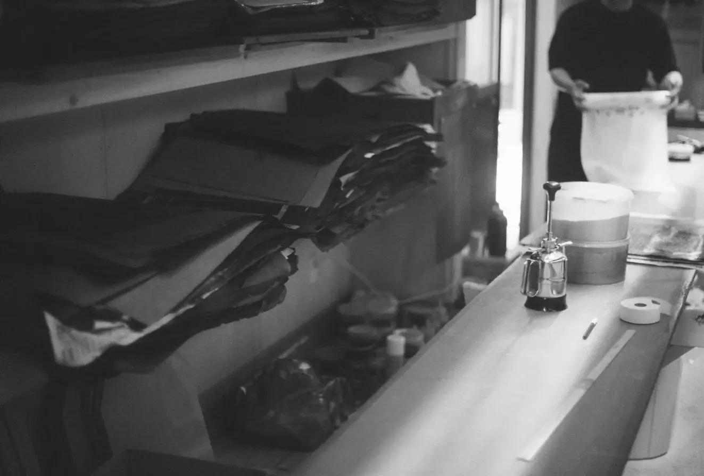
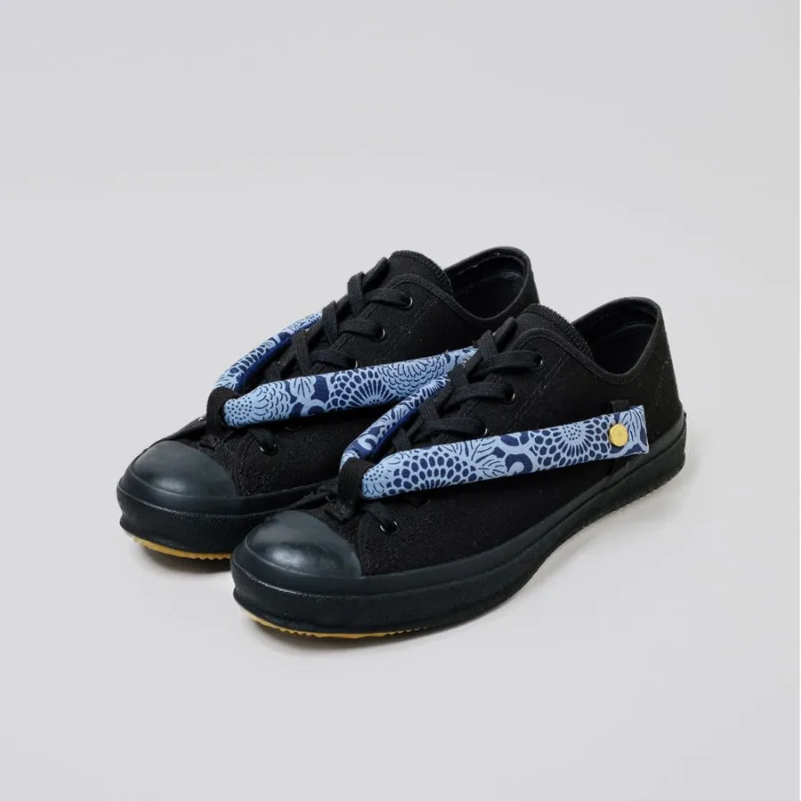

00 How it was made
The stencil
Kyoto · 岩井染工
01
This pair
and no other
Where the strap folds at the toe, a fleck of brighter indigo shows through. A machine would not leave it.
Sample data until this exact pair is recorded.

02
Kiku · Karakusa
Chrysanthemum and arabesque vine, both long held as good omens, joined in one pattern: a wish for long life, and for things to keep growing.
03
The stencil
型紙A pattern carved into washi paper coated with persimmon tannin, laid on the cloth, and the colour pressed through with a spatula.
工房 · The workshop

Matched by the craftsman's own sense, deciding how much dye to add as he goes.
05
HANAOSHOES
A hanao strap from Kyoto set on a MOONSTAR sneaker made in Kurume. The strap changes by hand, no tools, to suit the day.

Inside the hanao are cotton and stencil paper, and water takes their shape away. On rainy days, or when you wash the shoes, take the hanao off first.